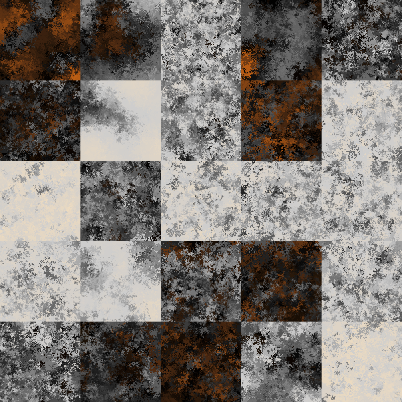

ART FROM CODE
rstudio :: conf(2022)
DAY ONE :: July 25
session one :: 09:00 - 10:30
Hands on introduction to generative art. Make your own pieces using {flametree}, {jasmines}, and more

session two :: 11:00 - 12:30
Multidimensional noise generators. Flow fields, fractals, and more using the {ambient} package

session three :: 13:30 - 15:00
Make the most of your {magick}. Programmatic image editing for art and profit
session four :: 15:30 - 17:00
Genuary in July. An exercise in taking an idea and running with it,
DAY TWO :: July 26
session one :: 09:00 - 10:30
Iterative function systems. Embrace the chaotic joy of the fractal flame and render quickly with {Rcpp}

session three :: 13:30 - 15:00
Beyond R: Generative art in other languages, hybrid systems that are only partly code-based, etc
session four :: 15:30 - 17:00
Creativity in art, code, and written expression: A surprisingly marketable skill